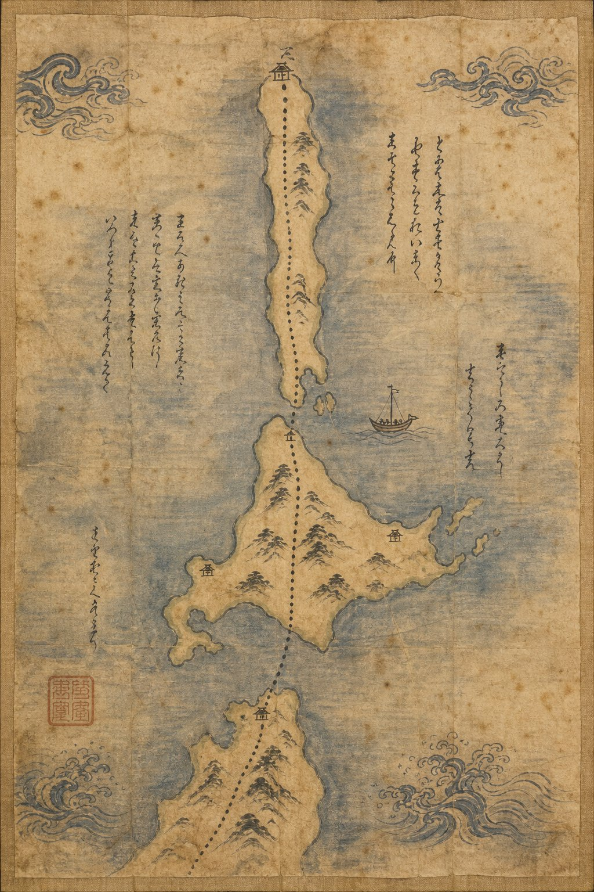
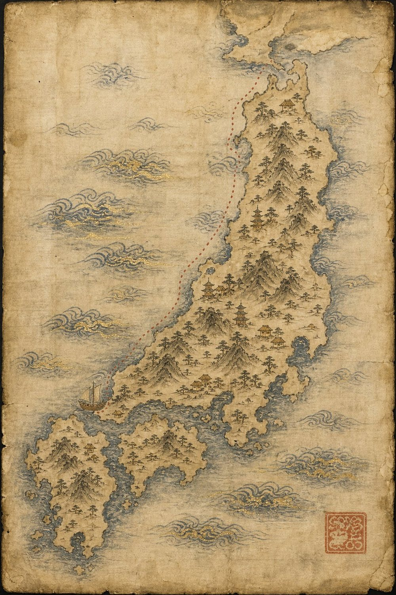
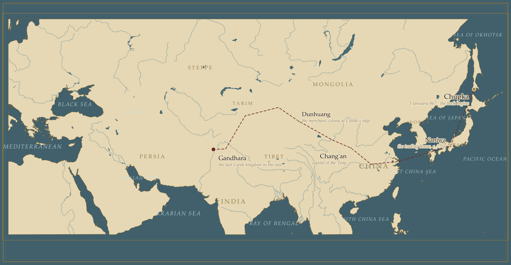
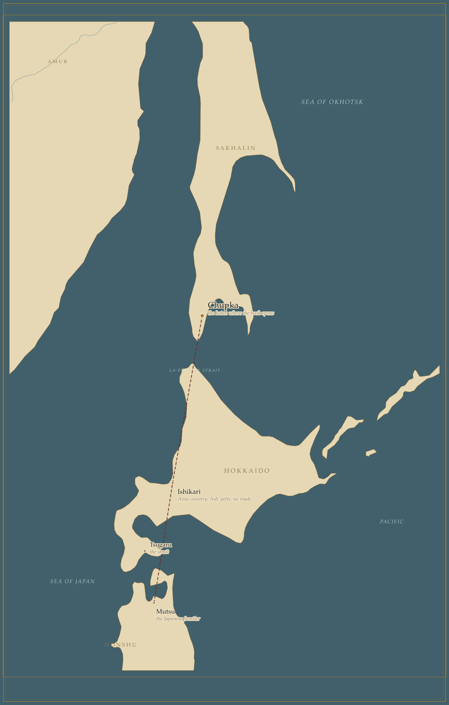

Plates
Maps
Drawn in the manner of the period, because the question is not where these places are but where the people in the book thought they were. There are two, and not three: the map of the whole inhabited world and the map of Macedonia read as decoration once they were set beside the northern sheet, and a book should not keep a plate to prove that it could make one.


Appendix to the plates
The geography, surveyed
For the reader who wants to know where the dotted lines actually ran, two plates drawn from modern survey data — coastlines, rivers and distances to scale. The book does not need them. They are here because the difference between the two ways of drawing the world is the whole subject.

